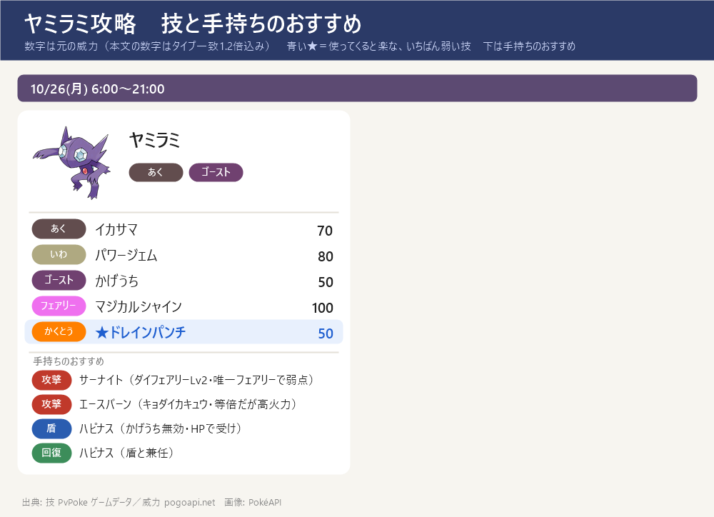
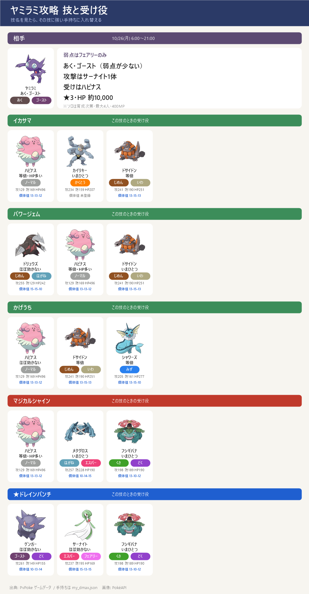

ダイマックス ヤミラミ 攻略（10/26 月）
ダイマックス ヤミラミ 攻略（10/26 月）- マックスマンデー 10/26(月) 6:00〜21:00（15時間）。ダイマックス ヤミラミ（あく・ゴースト）。参加に400MP・一度に戦えるのは最大4人。色違いあり
- 弱点はフェアリーのみ（×1.6）。あく・ゴーストは弱点が少なく、ノーマル・かくとう・エスパー技はほとんど効かない（ゴーストがノーマル・かくとうを、あくがエスパーを無効にするため）
- フェアリーで弱点を突けるのはサーナイト（ダイフェアリー Lv2）だけ。ほかの手持ちは当てても等倍 → 等倍でも火力の高いエースバーン（キョダイカキュウ・1発345）・ゲンガー（ダイホロウ・333）が次点
- 受け役はハピナス：ゴースト技（かげうち）は無効、ほかも弱点はドレインパンチ（いちばん弱い技）だけでHPが多い。メタグロスはあく・ゴースト技が2倍なので受けには使わない
- ねらい目の技：ドレインパンチ（50）。いちばん危ないのは マジカルシャイン（100・フェアリー）。サーナイトはマジカルシャイン・かげうちが痛いので、その技が自分を狙うときは攻撃だけしてハピナスの後ろへ
- 捕まえたヤミラミの育成価値は低め：攻略サイトでも『無理に強化は不要』が共通見解（ポケらく）。色違い・コレクション・ウーラオス進化の素材が主な目的。この期間の個体はゴースト通常技シャドークローを覚える。★3・ボスHP 約10,000でソロも一応可能（下の『何人なら勝てる？』）
技カード

スペシャルアタック候補とねらい目

- イカサマ（あく）威力 84
- パワージェム（いわ）威力 80
- かげうち（ゴースト）威力 60
- マジカルシャイン（フェアリー）威力 100 ← いちばん危ない
- ★ ドレインパンチ（かくとう）威力 50 ← ねらい目（いちばん弱い）
- 通常技はシャドークロー・だましうち。ゲージ技は上の5つから2つが抽選される
- 技は選べない。最初の大技の名前を見て、受け役を合わせる
ボスの攻撃のルール
- 1回のバトルで使う技は2つだけ：このボスのゲージ技（イカサマ・パワージェム・かげうち・マジカルシャイン・ドレインパンチ）から2つが抽選され、片方が『単体攻撃（スペシャル技）』・もう片方が『全体攻撃』に決まる。バトルの間はこの割り当てのまま変わらない
- 単体攻撃（スペシャル技）：ねらわれた1体の頭の上に3本線（黄色い光）が出て約1秒後に当たる。左右にスワイプで避けられる（ギリギリで避けるほど軽い：すぐ約5割減・点滅直前で約7割減）
- 全体攻撃：「○○の全体攻撃！」の予告の帯が出て場の全員に当たる。避けられない → ダイウォールを張るか、その技に強い受け役に交代する
- 見分け方：出た技が『頭上の3本線』なら単体、『○○の全体攻撃！』の帯なら全体。最初の1〜2回でどの技がどちらかが分かる。来た技名に合わせて受け役を置く → 下の『パターンの早見表』『パターン別の作戦』を見る
- 負けてもマックス粒子（MP）は減らない → 組み合わせが悪ければ気にせず入り直してよい（入り直すと組み合わせは変わることがある）
- ルールの出典：ポケモンWiki「マックスバトル」＋みんポケ「回避のしかた」で一致（実際に戦った感覚とも一致）
- あく・ゴーストなので、ノーマル・かくとう・エスパー技はほとんど効かない（ゴーストがノーマル・かくとうを、あくがエスパーを無効）。全体攻撃で削られる大きさは おおむね マジカルシャイン ＞ イカサマ・パワージェム ＞ かげうち ＞ ドレインパンチ の順
交代受けのコツ
- ボスの技は単体攻撃（スペシャル技）と全体攻撃の2種類で、守り方がちがう。単体は交代で受けず回避・全体だけ予告を見て交代で受ける
- 単体攻撃（スペシャル技）＝交代せずスワイプで回避：ねらわれた1体の頭の上に3本線（黄色い光）が出て約1秒後に当たる → すぐ横にスワイプして避ける。交代は間に合わないので、単体攻撃を交代で受け役に回すことはしない（先頭はそのまま避ける）
- 全体攻撃＝予告を見てから受け役に交代：バトル開始時・ボスの技の直後・ダイマックス解除時に「○○の全体攻撃！」の予告の帯が出る → 予告を見てから、その技に強い受け役に交代して受け、受けたら先頭に戻す（避けられないのでダイウォールを張ってもよい）
サイトで違っていた点
- 星の数がサイトで違う：ポケらく（対策ページ）とゲームウィズはともに★3、9db は★2（捕獲個体のMaxCP 843から）。ボスHPが約10,000（ポケらく・Pokebattler一致）・ボスCP約19,000（Pokebattler）と大きく、専用の対策ページ2つが★3としていることから、このページは★3・HP 約10,000を採用（10/26 の日報も★3にそろえた）
- 弱点の倍率：ポケらく・ゲームペディア・Pokebattler は×1.6、ゲームウィズのみ×2.56（1.6×1.6）と表記 → 単一弱点なので×1.6が妥当。いずれも『弱点はフェアリーのみ』で一致
- ボスのゲージ技：ポケらくが最も網羅（イカサマ・パワージェム・かげうち・マジカルシャイン・ドレインパンチ・おんがえし）。ゲームウィズ・ゲームペディアともおおむね一致。おんがえし・やつあたりはゲームデータから除外。威力はゲームデータ（PvPoke／pogoapi）基準
- ソロ可否もサイトで差：ゲームペディア『TL65以上は1人・TL40以上は2人・TL30以下は4人』、ポケらく『ソロ難易度は高め』、ゲームウィズ『育っていればソロ可能』 → このページは安全側でダイキノコ併用のソロ／確実には2人を推奨
出陣する3体
出陣する3体：サーナイト（攻撃）・ハピナス（受け）・ドリュウズ（受け）。連れて行けるのは1人3体まで。下の『パターン別の作戦』の受け1・受け2・攻撃はこの3体の中で選ぶ
ヤミラミは弱点がフェアリーだけ → 攻撃はサーナイト（ダイフェアリー）一択。受けはハピナス（かげうちは無効・HPと回復）とドリュウズ（パワージェムをほぼ無効・マジカルシャインを半減）
イカサマ（あく）を半減以下で受けられる手持ちがこの3体にいないので、イカサマがからむパターンは受けにくい（下の作戦で片方はダイウォール／入り直しになる）。あく・ゴーストは弱点が少なく元々受けづらいボス
高火力で等倍のエースバーン（キョダイカキュウ）・ゲンガー（ダイホロウ）は、攻撃の2番手として受け役と入れ替えてもよい（ただし受けの穴は増える）
パターンの早見表
どのパターンでも、まず弱点のない受け役で受けて技を確認 → 下のとおり入れ替える。評価は避けられない『全体攻撃』で決める：技の威力そのものが高い（150以上）か、相性の良い受け役でも大きく削られる（目安70以上）と『はずれ』、威力が低め（100以下）で相性の良い受け役なら軽い（目安50以下）と『当たり』、その間が『ふつう』。全技が高威力のボスでは『当たり』は出ない（単体攻撃はスワイプで避けられるので評価に入れない）
| # | 単体 3本線・避ける | 全体 予告・避けられない | 全体の 威力 | 評価 | 全体の受け役 |
|---|---|---|---|---|---|
| 1 | かげうち | ドレインパンチ | 50 | 当たり | フシギバナ |
| 2 | パワージェム | ドレインパンチ | 50 | 当たり | ゲンガー |
| 3 | ドレインパンチ | かげうち | 60 | 当たり | ハピナス |
| 4 | パワージェム | かげうち | 60 | 当たり | ハピナス |
| 5 | イカサマ | ドレインパンチ | 50 | 当たり | サーナイト |
| 6 | ドレインパンチ | パワージェム | 80 | 当たり | メタグロス |
| 7 | マジカルシャイン | ドレインパンチ | 50 | 当たり | ゲンガー |
| 8 | かげうち | パワージェム | 80 | 当たり | ドリュウズ |
| 9 | イカサマ | かげうち | 60 | 当たり | ハピナス |
| 10 | マジカルシャイン | かげうち | 60 | 当たり | ハピナス |
| 11 | イカサマ | パワージェム | 80 | 当たり | ドリュウズ |
| 12 | マジカルシャイン | パワージェム | 80 | 当たり | ドリュウズ |
| 13 | ドレインパンチ | イカサマ | 84 | ふつう | カイリキー |
| 14 | かげうち | イカサマ | 84 | ふつう | カイリキー |
| 15 | パワージェム | イカサマ | 84 | ふつう | カイリキー |
| 16 | ドレインパンチ | マジカルシャイン | 100 | ふつう | メタグロス |
| 17 | かげうち | マジカルシャイン | 100 | ふつう | ドリュウズ |
| 18 | マジカルシャイン | イカサマ | 84 | ふつう | カイリキー |
| 19 | パワージェム | マジカルシャイン | 100 | ふつう | メタグロス |
| 20 | イカサマ | マジカルシャイン | 100 | ふつう | ドリュウズ |
数字＝全体攻撃1発の目安（威力×相性・タイプ一致1.2倍込み）。『全体の威力』は技そのものの威力。評価＝威力150以上か目安70以上→はずれ／威力100以下かつ目安50以下→当たり／その間→ふつう。手持ち・個体値・技レベルは my_dmax.json より
パターン別の作戦
受け2体＋攻撃1体が基本。各パターンで上の『出陣する3体』の中から 受け1（基本の先頭・スペシャル技をスワイプで回避しつつ受ける）／受け2（全体攻撃の予告で交代。攻撃役が全体を半減以下で受けられるなら攻撃役に交代／受け1のままでよいなら交代不要）／攻撃（ダイマックスのとき交代）を選ぶ。スペシャル技は交代で受けず回避し、全体攻撃だけ交代で受ける（当たり→ふつう→はずれ の順）
パターン1 単体=かげうち／全体=ドレインパンチ ［当たり］
評価：当たり — 避けられない全体攻撃が威力低めで、相性の良い受け役なら軽い組み合わせ。少人数ならこれになるまで入り直すのが定番
この組み合わせは 単体＝かげうち（頭上に3本線・スワイプで回避）と 全体＝ドレインパンチ（「ドレインパンチの全体攻撃！」の予告・避けられない）。受け2体＋攻撃1体でこう動く：
受け1（基本の先頭）＝ハピナス：スペシャル技〔かげうち〕をほぼ効かない（1発23）で受けられる。スペシャル技は交代で受けられないので先頭に置き、3本線が出たらスワイプで回避しつつ通常技でゲージをためる
受け2（全体攻撃の予告で交代）＝攻撃役〔サーナイト〕に交代：攻撃役が全体攻撃〔ドレインパンチ〕をほぼ効かない（1発20）で受けられる → 全体攻撃の予告が出たら攻撃役に交代して受け、受けたら受け1に戻す
攻撃（ダイマックスのとき交代）＝サーナイト：フェアリー技でボスの弱点を突ける（1発362）。ダイマックスがたまったら交代して弱点を突く。ただし単体〔かげうち〕が弱点なので、かげうちに狙われたら攻撃だけしてスワイプで回避
見分け方：最初に頭上の3本線でかげうち、予告の帯でドレインパンチが来たらこのパターン
パターン2 単体=パワージェム／全体=ドレインパンチ ［当たり］
評価：当たり — 避けられない全体攻撃が威力低めで、相性の良い受け役なら軽い組み合わせ。少人数ならこれになるまで入り直すのが定番
この組み合わせは 単体＝パワージェム（頭上に3本線・スワイプで回避）と 全体＝ドレインパンチ（「ドレインパンチの全体攻撃！」の予告・避けられない）。受け2体＋攻撃1体でこう動く：
受け1（基本の先頭）＝ドリュウズ：スペシャル技〔パワージェム〕をほぼ効かない（1発31）で受けられる。スペシャル技は交代で受けられないので先頭に置き、3本線が出たらスワイプで回避しつつ通常技でゲージをためる
受け2（全体攻撃の予告で交代）＝攻撃役〔サーナイト〕に交代：攻撃役が全体攻撃〔ドレインパンチ〕をほぼ効かない（1発20）で受けられる → 全体攻撃の予告が出たら攻撃役に交代して受け、受けたら受け1に戻す
攻撃（ダイマックスのとき交代）＝サーナイト：フェアリー技でボスの弱点を突ける（1発362）。ダイマックスがたまったら交代して弱点を突く
見分け方：最初に頭上の3本線でパワージェム、予告の帯でドレインパンチが来たらこのパターン
パターン3 単体=ドレインパンチ／全体=かげうち ［当たり］
評価：当たり — 避けられない全体攻撃が威力低めで、相性の良い受け役なら軽い組み合わせ。少人数ならこれになるまで入り直すのが定番
この組み合わせは 単体＝ドレインパンチ（頭上に3本線・スワイプで回避）と 全体＝かげうち（「かげうちの全体攻撃！」の予告・避けられない）。受け2体＋攻撃1体でこう動く：
受け1（基本の先頭）＝サーナイト：スペシャル技〔ドレインパンチ〕をほぼ効かない（1発20）で受けられる。スペシャル技は交代で受けられないので先頭に置き、3本線が出たらスワイプで回避しつつ通常技でゲージをためる
受け2（全体攻撃の予告で交代）＝ハピナス：全体攻撃〔かげうち〕を3体でいちばん軽いほぼ効かない（1発23）で受けられる → 予告が出たら交代して受け、受けたら受け1に戻す。この受け役はダイウォールも張れる
攻撃（ダイマックスのとき交代）＝サーナイト（受け1と兼任）：フェアリー技でボスの弱点を突ける（1発362）。ダイマックスがたまったら交代して弱点を突く。全体〔かげうち〕が弱点なので、かげうちが全体のときは前に出さない
見分け方：最初に頭上の3本線でドレインパンチ、予告の帯でかげうちが来たらこのパターン
パターン4 単体=パワージェム／全体=かげうち ［当たり］
評価：当たり — 避けられない全体攻撃が威力低めで、相性の良い受け役なら軽い組み合わせ。少人数ならこれになるまで入り直すのが定番
この組み合わせは 単体＝パワージェム（頭上に3本線・スワイプで回避）と 全体＝かげうち（「かげうちの全体攻撃！」の予告・避けられない）。受け2体＋攻撃1体でこう動く：
受け1（基本の先頭）＝ドリュウズ：スペシャル技〔パワージェム〕をほぼ効かない（1発31）で受けられる。スペシャル技は交代で受けられないので先頭に置き、3本線が出たらスワイプで回避しつつ通常技でゲージをためる
受け2（全体攻撃の予告で交代）＝ハピナス：全体攻撃〔かげうち〕を3体でいちばん軽いほぼ効かない（1発23）で受けられる → 予告が出たら交代して受け、受けたら受け1に戻す。この受け役はダイウォールも張れる
攻撃（ダイマックスのとき交代）＝サーナイト：フェアリー技でボスの弱点を突ける（1発362）。ダイマックスがたまったら交代して弱点を突く。全体〔かげうち〕が弱点なので、かげうちが全体のときは前に出さない
見分け方：最初に頭上の3本線でパワージェム、予告の帯でかげうちが来たらこのパターン
パターン5 単体=イカサマ／全体=ドレインパンチ ［当たり］
評価：当たり — 避けられない全体攻撃が威力低めで、相性の良い受け役なら軽い組み合わせ。少人数ならこれになるまで入り直すのが定番
この組み合わせは 単体＝イカサマ（頭上に3本線・スワイプで回避）と 全体＝ドレインパンチ（「ドレインパンチの全体攻撃！」の予告・避けられない）。受け2体＋攻撃1体でこう動く：
受け1（基本の先頭）＝サーナイト：この3体には〔イカサマ〕を半減以下で受けられる手持ちがいない → いちばん被害の小さいサーナイト（等倍 1発84）を先頭にして、3本線はスワイプで回避する
受け2（全体攻撃の予告で交代）＝攻撃役〔サーナイト〕に交代：攻撃役が全体攻撃〔ドレインパンチ〕をほぼ効かない（1発20）で受けられる → 全体攻撃の予告が出たら攻撃役に交代して受け、受けたら受け1に戻す
攻撃（ダイマックスのとき交代）＝サーナイト：フェアリー技でボスの弱点を突ける（1発362）。ダイマックスがたまったら交代して弱点を突く
見分け方：最初に頭上の3本線でイカサマ、予告の帯でドレインパンチが来たらこのパターン
パターン6 単体=ドレインパンチ／全体=パワージェム ［当たり］
評価：当たり — 避けられない全体攻撃が威力低めで、相性の良い受け役なら軽い組み合わせ。少人数ならこれになるまで入り直すのが定番
この組み合わせは 単体＝ドレインパンチ（頭上に3本線・スワイプで回避）と 全体＝パワージェム（「パワージェムの全体攻撃！」の予告・避けられない）。受け2体＋攻撃1体でこう動く：
受け1（基本の先頭）＝サーナイト：スペシャル技〔ドレインパンチ〕をほぼ効かない（1発20）で受けられる。スペシャル技は交代で受けられないので先頭に置き、3本線が出たらスワイプで回避しつつ通常技でゲージをためる
受け2（全体攻撃の予告で交代）＝ドリュウズ：全体攻撃〔パワージェム〕を3体でいちばん軽いほぼ効かない（1発31）で受けられる → 予告が出たら交代して受け、受けたら受け1に戻す。この受け役はダイウォールを持たないので、盾を張るなら ハピナス（ダイウォール Lv1）
攻撃（ダイマックスのとき交代）＝サーナイト（受け1と兼任）：フェアリー技でボスの弱点を突ける（1発362）。ダイマックスがたまったら交代して弱点を突く
見分け方：最初に頭上の3本線でドレインパンチ、予告の帯でパワージェムが来たらこのパターン
パターン7 単体=マジカルシャイン／全体=ドレインパンチ ［当たり］
評価：当たり — 避けられない全体攻撃が威力低めで、相性の良い受け役なら軽い組み合わせ。少人数ならこれになるまで入り直すのが定番
この組み合わせは 単体＝マジカルシャイン（頭上に3本線・スワイプで回避）と 全体＝ドレインパンチ（「ドレインパンチの全体攻撃！」の予告・避けられない）。受け2体＋攻撃1体でこう動く：
受け1（基本の先頭）＝ドリュウズ：スペシャル技〔マジカルシャイン〕をいまひとつ（1発62）で受けられる。スペシャル技は交代で受けられないので先頭に置き、3本線が出たらスワイプで回避しつつ通常技でゲージをためる
受け2（全体攻撃の予告で交代）＝攻撃役〔サーナイト〕に交代：攻撃役が全体攻撃〔ドレインパンチ〕をほぼ効かない（1発20）で受けられる → 全体攻撃の予告が出たら攻撃役に交代して受け、受けたら受け1に戻す
攻撃（ダイマックスのとき交代）＝サーナイト：フェアリー技でボスの弱点を突ける（1発362）。ダイマックスがたまったら交代して弱点を突く
見分け方：最初に頭上の3本線でマジカルシャイン、予告の帯でドレインパンチが来たらこのパターン
パターン8 単体=かげうち／全体=パワージェム ［当たり］
評価：当たり — 避けられない全体攻撃が威力低めで、相性の良い受け役なら軽い組み合わせ。少人数ならこれになるまで入り直すのが定番
この組み合わせは 単体＝かげうち（頭上に3本線・スワイプで回避）と 全体＝パワージェム（「パワージェムの全体攻撃！」の予告・避けられない）。受け2体＋攻撃1体でこう動く：
受け1（基本の先頭）＝ハピナス：スペシャル技〔かげうち〕をほぼ効かない（1発23）で受けられる。スペシャル技は交代で受けられないので先頭に置き、3本線が出たらスワイプで回避しつつ通常技でゲージをためる
受け2（全体攻撃の予告で交代）＝ドリュウズ：全体攻撃〔パワージェム〕を3体でいちばん軽いほぼ効かない（1発31）で受けられる → 予告が出たら交代して受け、受けたら受け1に戻す。この受け役はダイウォールを持たないので、盾を張るなら ハピナス（ダイウォール Lv1）
攻撃（ダイマックスのとき交代）＝サーナイト：フェアリー技でボスの弱点を突ける（1発362）。ダイマックスがたまったら交代して弱点を突く。ただし単体〔かげうち〕が弱点なので、かげうちに狙われたら攻撃だけしてスワイプで回避
見分け方：最初に頭上の3本線でかげうち、予告の帯でパワージェムが来たらこのパターン
パターン9 単体=イカサマ／全体=かげうち ［当たり］
評価：当たり — 避けられない全体攻撃が威力低めで、相性の良い受け役なら軽い組み合わせ。少人数ならこれになるまで入り直すのが定番
この組み合わせは 単体＝イカサマ（頭上に3本線・スワイプで回避）と 全体＝かげうち（「かげうちの全体攻撃！」の予告・避けられない）。受け2体＋攻撃1体でこう動く：
受け1（基本の先頭）＝サーナイト：この3体には〔イカサマ〕を半減以下で受けられる手持ちがいない → いちばん被害の小さいサーナイト（等倍 1発84）を先頭にして、3本線はスワイプで回避する
受け2（全体攻撃の予告で交代）＝ハピナス：全体攻撃〔かげうち〕を3体でいちばん軽いほぼ効かない（1発23）で受けられる → 予告が出たら交代して受け、受けたら受け1に戻す。この受け役はダイウォールも張れる
攻撃（ダイマックスのとき交代）＝サーナイト：フェアリー技でボスの弱点を突ける（1発362）。ダイマックスがたまったら交代して弱点を突く。全体〔かげうち〕が弱点なので、かげうちが全体のときは前に出さない
見分け方：最初に頭上の3本線でイカサマ、予告の帯でかげうちが来たらこのパターン
パターン10 単体=マジカルシャイン／全体=かげうち ［当たり］
評価：当たり — 避けられない全体攻撃が威力低めで、相性の良い受け役なら軽い組み合わせ。少人数ならこれになるまで入り直すのが定番
この組み合わせは 単体＝マジカルシャイン（頭上に3本線・スワイプで回避）と 全体＝かげうち（「かげうちの全体攻撃！」の予告・避けられない）。受け2体＋攻撃1体でこう動く：
受け1（基本の先頭）＝ドリュウズ：スペシャル技〔マジカルシャイン〕をいまひとつ（1発62）で受けられる。スペシャル技は交代で受けられないので先頭に置き、3本線が出たらスワイプで回避しつつ通常技でゲージをためる
受け2（全体攻撃の予告で交代）＝ハピナス：全体攻撃〔かげうち〕を3体でいちばん軽いほぼ効かない（1発23）で受けられる → 予告が出たら交代して受け、受けたら受け1に戻す。この受け役はダイウォールも張れる
攻撃（ダイマックスのとき交代）＝サーナイト：フェアリー技でボスの弱点を突ける（1発362）。ダイマックスがたまったら交代して弱点を突く。全体〔かげうち〕が弱点なので、かげうちが全体のときは前に出さない
見分け方：最初に頭上の3本線でマジカルシャイン、予告の帯でかげうちが来たらこのパターン
パターン11 単体=イカサマ／全体=パワージェム ［当たり］
評価：当たり — 避けられない全体攻撃が威力低めで、相性の良い受け役なら軽い組み合わせ。少人数ならこれになるまで入り直すのが定番
この組み合わせは 単体＝イカサマ（頭上に3本線・スワイプで回避）と 全体＝パワージェム（「パワージェムの全体攻撃！」の予告・避けられない）。受け2体＋攻撃1体でこう動く：
受け1（基本の先頭）＝サーナイト：この3体には〔イカサマ〕を半減以下で受けられる手持ちがいない → いちばん被害の小さいサーナイト（等倍 1発84）を先頭にして、3本線はスワイプで回避する
受け2（全体攻撃の予告で交代）＝ドリュウズ：全体攻撃〔パワージェム〕を3体でいちばん軽いほぼ効かない（1発31）で受けられる → 予告が出たら交代して受け、受けたら受け1に戻す。この受け役はダイウォールを持たないので、盾を張るなら ハピナス（ダイウォール Lv1）
攻撃（ダイマックスのとき交代）＝サーナイト：フェアリー技でボスの弱点を突ける（1発362）。ダイマックスがたまったら交代して弱点を突く
見分け方：最初に頭上の3本線でイカサマ、予告の帯でパワージェムが来たらこのパターン
パターン12 単体=マジカルシャイン／全体=パワージェム ［当たり］
評価：当たり — 避けられない全体攻撃が威力低めで、相性の良い受け役なら軽い組み合わせ。少人数ならこれになるまで入り直すのが定番
この組み合わせは 単体＝マジカルシャイン（頭上に3本線・スワイプで回避）と 全体＝パワージェム（「パワージェムの全体攻撃！」の予告・避けられない）。受け2体＋攻撃1体でこう動く：
受け1（基本の先頭）＝ドリュウズ：スペシャル技〔マジカルシャイン〕をいまひとつ（1発62）で受けられる。スペシャル技は交代で受けられないので先頭に置き、3本線が出たらスワイプで回避しつつ通常技でゲージをためる
受け2（全体攻撃の予告で交代）＝交代不要（受け1のままでよい）：受け1が全体攻撃〔パワージェム〕もほぼ効かないで受けられるので、交代せずそのまま受けてよい（不安ならダイウォールで固める）
攻撃（ダイマックスのとき交代）＝サーナイト：フェアリー技でボスの弱点を突ける（1発362）。ダイマックスがたまったら交代して弱点を突く
見分け方：最初に頭上の3本線でマジカルシャイン、予告の帯でパワージェムが来たらこのパターン
パターン13 単体=ドレインパンチ／全体=イカサマ ［ふつう］
評価：ふつう — 受け役を合わせれば対応できる組み合わせ。ただし全体攻撃はそれなりに重いので、盾・交代をサボらない
この組み合わせは 単体＝ドレインパンチ（頭上に3本線・スワイプで回避）と 全体＝イカサマ（「イカサマの全体攻撃！」の予告・避けられない）。受け2体＋攻撃1体でこう動く：
受け1（基本の先頭）＝サーナイト：スペシャル技〔ドレインパンチ〕をほぼ効かない（1発20）で受けられる。スペシャル技は交代で受けられないので先頭に置き、3本線が出たらスワイプで回避しつつ通常技でゲージをためる
受け2（全体攻撃の予告で交代）＝交代先なし・ダイウォールで受ける：全体攻撃〔イカサマ〕を半減以下で受けられる手持ちがこの3体にいない → 先頭のままダイウォールで受ける（ハピナス（ダイウォール Lv1））
攻撃（ダイマックスのとき交代）＝サーナイト（受け1と兼任）：フェアリー技でボスの弱点を突ける（1発362）。ダイマックスがたまったら交代して弱点を突く
見分け方：最初に頭上の3本線でドレインパンチ、予告の帯でイカサマが来たらこのパターン
パターン14 単体=かげうち／全体=イカサマ ［ふつう］
評価：ふつう — 受け役を合わせれば対応できる組み合わせ。ただし全体攻撃はそれなりに重いので、盾・交代をサボらない
この組み合わせは 単体＝かげうち（頭上に3本線・スワイプで回避）と 全体＝イカサマ（「イカサマの全体攻撃！」の予告・避けられない）。受け2体＋攻撃1体でこう動く：
受け1（基本の先頭）＝ハピナス：スペシャル技〔かげうち〕をほぼ効かない（1発23）で受けられる。スペシャル技は交代で受けられないので先頭に置き、3本線が出たらスワイプで回避しつつ通常技でゲージをためる
受け2（全体攻撃の予告で交代）＝交代先なし・ダイウォールで受ける：全体攻撃〔イカサマ〕を半減以下で受けられる手持ちがこの3体にいない → 先頭のままダイウォールで受ける（ハピナス（ダイウォール Lv1））
攻撃（ダイマックスのとき交代）＝サーナイト：フェアリー技でボスの弱点を突ける（1発362）。ダイマックスがたまったら交代して弱点を突く。ただし単体〔かげうち〕が弱点なので、かげうちに狙われたら攻撃だけしてスワイプで回避
見分け方：最初に頭上の3本線でかげうち、予告の帯でイカサマが来たらこのパターン
パターン15 単体=パワージェム／全体=イカサマ ［ふつう］
評価：ふつう — 受け役を合わせれば対応できる組み合わせ。ただし全体攻撃はそれなりに重いので、盾・交代をサボらない
この組み合わせは 単体＝パワージェム（頭上に3本線・スワイプで回避）と 全体＝イカサマ（「イカサマの全体攻撃！」の予告・避けられない）。受け2体＋攻撃1体でこう動く：
受け1（基本の先頭）＝ドリュウズ：スペシャル技〔パワージェム〕をほぼ効かない（1発31）で受けられる。スペシャル技は交代で受けられないので先頭に置き、3本線が出たらスワイプで回避しつつ通常技でゲージをためる
受け2（全体攻撃の予告で交代）＝交代先なし・ダイウォールで受ける：全体攻撃〔イカサマ〕を半減以下で受けられる手持ちがこの3体にいない → 先頭のままダイウォールで受ける（ハピナス（ダイウォール Lv1））
攻撃（ダイマックスのとき交代）＝サーナイト：フェアリー技でボスの弱点を突ける（1発362）。ダイマックスがたまったら交代して弱点を突く
見分け方：最初に頭上の3本線でパワージェム、予告の帯でイカサマが来たらこのパターン
パターン16 単体=ドレインパンチ／全体=マジカルシャイン ［ふつう］
評価：ふつう — 受け役を合わせれば対応できる組み合わせ。ただし全体攻撃はそれなりに重いので、盾・交代をサボらない
この組み合わせは 単体＝ドレインパンチ（頭上に3本線・スワイプで回避）と 全体＝マジカルシャイン（「マジカルシャインの全体攻撃！」の予告・避けられない）。受け2体＋攻撃1体でこう動く：
受け1（基本の先頭）＝サーナイト：スペシャル技〔ドレインパンチ〕をほぼ効かない（1発20）で受けられる。スペシャル技は交代で受けられないので先頭に置き、3本線が出たらスワイプで回避しつつ通常技でゲージをためる
受け2（全体攻撃の予告で交代）＝ドリュウズ：全体攻撃〔マジカルシャイン〕を3体でいちばん軽いいまひとつ（1発62）で受けられる → 予告が出たら交代して受け、受けたら受け1に戻す。この受け役はダイウォールを持たないので、盾を張るなら ハピナス（ダイウォール Lv1）
攻撃（ダイマックスのとき交代）＝サーナイト（受け1と兼任）：フェアリー技でボスの弱点を突ける（1発362）。ダイマックスがたまったら交代して弱点を突く
見分け方：最初に頭上の3本線でドレインパンチ、予告の帯でマジカルシャインが来たらこのパターン
パターン17 単体=かげうち／全体=マジカルシャイン ［ふつう］
評価：ふつう — 受け役を合わせれば対応できる組み合わせ。ただし全体攻撃はそれなりに重いので、盾・交代をサボらない
この組み合わせは 単体＝かげうち（頭上に3本線・スワイプで回避）と 全体＝マジカルシャイン（「マジカルシャインの全体攻撃！」の予告・避けられない）。受け2体＋攻撃1体でこう動く：
受け1（基本の先頭）＝ハピナス：スペシャル技〔かげうち〕をほぼ効かない（1発23）で受けられる。スペシャル技は交代で受けられないので先頭に置き、3本線が出たらスワイプで回避しつつ通常技でゲージをためる
受け2（全体攻撃の予告で交代）＝ドリュウズ：全体攻撃〔マジカルシャイン〕を3体でいちばん軽いいまひとつ（1発62）で受けられる → 予告が出たら交代して受け、受けたら受け1に戻す。この受け役はダイウォールを持たないので、盾を張るなら ハピナス（ダイウォール Lv1）
攻撃（ダイマックスのとき交代）＝サーナイト：フェアリー技でボスの弱点を突ける（1発362）。ダイマックスがたまったら交代して弱点を突く。ただし単体〔かげうち〕が弱点なので、かげうちに狙われたら攻撃だけしてスワイプで回避
見分け方：最初に頭上の3本線でかげうち、予告の帯でマジカルシャインが来たらこのパターン
パターン18 単体=マジカルシャイン／全体=イカサマ ［ふつう］
評価：ふつう — 受け役を合わせれば対応できる組み合わせ。ただし全体攻撃はそれなりに重いので、盾・交代をサボらない
この組み合わせは 単体＝マジカルシャイン（頭上に3本線・スワイプで回避）と 全体＝イカサマ（「イカサマの全体攻撃！」の予告・避けられない）。受け2体＋攻撃1体でこう動く：
受け1（基本の先頭）＝ドリュウズ：スペシャル技〔マジカルシャイン〕をいまひとつ（1発62）で受けられる。スペシャル技は交代で受けられないので先頭に置き、3本線が出たらスワイプで回避しつつ通常技でゲージをためる
受け2（全体攻撃の予告で交代）＝交代先なし・ダイウォールで受ける：全体攻撃〔イカサマ〕を半減以下で受けられる手持ちがこの3体にいない → 先頭のままダイウォールで受ける（ハピナス（ダイウォール Lv1））
攻撃（ダイマックスのとき交代）＝サーナイト：フェアリー技でボスの弱点を突ける（1発362）。ダイマックスがたまったら交代して弱点を突く
見分け方：最初に頭上の3本線でマジカルシャイン、予告の帯でイカサマが来たらこのパターン
パターン19 単体=パワージェム／全体=マジカルシャイン ［ふつう］
評価：ふつう — 受け役を合わせれば対応できる組み合わせ。ただし全体攻撃はそれなりに重いので、盾・交代をサボらない
この組み合わせは 単体＝パワージェム（頭上に3本線・スワイプで回避）と 全体＝マジカルシャイン（「マジカルシャインの全体攻撃！」の予告・避けられない）。受け2体＋攻撃1体でこう動く：
受け1（基本の先頭）＝ドリュウズ：スペシャル技〔パワージェム〕をほぼ効かない（1発31）で受けられる。スペシャル技は交代で受けられないので先頭に置き、3本線が出たらスワイプで回避しつつ通常技でゲージをためる
受け2（全体攻撃の予告で交代）＝交代不要（受け1のままでよい）：受け1が全体攻撃〔マジカルシャイン〕もいまひとつで受けられるので、交代せずそのまま受けてよい（不安ならダイウォールで固める）
攻撃（ダイマックスのとき交代）＝サーナイト：フェアリー技でボスの弱点を突ける（1発362）。ダイマックスがたまったら交代して弱点を突く
見分け方：最初に頭上の3本線でパワージェム、予告の帯でマジカルシャインが来たらこのパターン
パターン20 単体=イカサマ／全体=マジカルシャイン ［ふつう］
評価：ふつう — 受け役を合わせれば対応できる組み合わせ。ただし全体攻撃はそれなりに重いので、盾・交代をサボらない
この組み合わせは 単体＝イカサマ（頭上に3本線・スワイプで回避）と 全体＝マジカルシャイン（「マジカルシャインの全体攻撃！」の予告・避けられない）。受け2体＋攻撃1体でこう動く：
受け1（基本の先頭）＝サーナイト：この3体には〔イカサマ〕を半減以下で受けられる手持ちがいない → いちばん被害の小さいサーナイト（等倍 1発84）を先頭にして、3本線はスワイプで回避する
受け2（全体攻撃の予告で交代）＝ドリュウズ：全体攻撃〔マジカルシャイン〕を3体でいちばん軽いいまひとつ（1発62）で受けられる → 予告が出たら交代して受け、受けたら受け1に戻す。この受け役はダイウォールを持たないので、盾を張るなら ハピナス（ダイウォール Lv1）
攻撃（ダイマックスのとき交代）＝サーナイト：フェアリー技でボスの弱点を突ける（1発362）。ダイマックスがたまったら交代して弱点を突く
見分け方：最初に頭上の3本線でイカサマ、予告の帯でマジカルシャインが来たらこのパターン
何人なら勝てる？（人数の目安）
- 前提：ボスHP 約10,000（ポケらく・Pokebattler）。下の『攻撃役の1発ダメージ』で、ダイ技6発（ダイマックス2回×3発）＋通常技をざっくり合算。ゲージ技・応援・3回目以降のダイマックスは未計上＝控えめ。約5分で暴走（★3は暴走後が特にきつい）。ディアルガのページと同じ考え方
- ダイ技1発：サーナイト 362（ダイフェアリー Lv2・唯一の弱点）／エースバーン 345（キョダイ・等倍）／ゲンガー 333（ダイホロウ Lv3・等倍）
- 1人が5分で削る量（通常技＋ダイ技6発）：サーナイト主体で約 4,000〜4,500。ダイキノコ（ダイ技2倍）で約 6,000〜6,500
- ソロ：手持ちの数字ではダイキノコを使ってもギリギリ届かないことがある → 確実にいくなら2人。『TL65以上ならソロ可能』とするサイト（ゲームペディア）もあるが、安全側に見ておく
- 2人：合計 約8,000〜9,000（ダイキノコなし）／ ダイキノコありで約12,000以上 → 倒せる。3〜4人なら余裕
- 守り：ハピナスで受け＆回復（かげうちは無効）。暴走寸前（約4分30秒）が出たら盾・回復をやめてダイフェアリーだけ撃つ
手持ちが受けるダメージ
- ハピナス：イカサマ 84 ／ パワージェム 80 ／ かげうち 23（ほぼ効かない） ／ マジカルシャイン 100 ／ ドレインパンチ 80（弱点）
- ドサイドン：イカサマ 84 ／ パワージェム 50（いまひとつ） ／ かげうち 60 ／ マジカルシャイン 100 ／ ドレインパンチ 80（弱点）
- シャワーズ：イカサマ 84 ／ パワージェム 80 ／ かげうち 60 ／ マジカルシャイン 100 ／ ドレインパンチ 50
- フシギバナ：イカサマ 84 ／ パワージェム 80 ／ かげうち 60 ／ マジカルシャイン 62（いまひとつ） ／ ドレインパンチ 31（いまひとつ）
- メタグロス：イカサマ 134（弱点） ／ パワージェム 50（いまひとつ） ／ かげうち 96（弱点） ／ マジカルシャイン 62（いまひとつ） ／ ドレインパンチ 50
- ドリュウズ：イカサマ 84 ／ パワージェム 31（ほぼ効かない） ／ かげうち 60 ／ マジカルシャイン 62（いまひとつ） ／ ドレインパンチ 80（弱点）
- カイリキー：イカサマ 52（いまひとつ） ／ パワージェム 50（いまひとつ） ／ かげうち 60 ／ マジカルシャイン 160（弱点） ／ ドレインパンチ 50
- サーナイト：イカサマ 84 ／ パワージェム 80 ／ かげうち 96（弱点） ／ マジカルシャイン 100 ／ ドレインパンチ 20（ほぼ効かない）
- エースバーン：イカサマ 84 ／ パワージェム 128（弱点） ／ かげうち 60 ／ マジカルシャイン 62（いまひとつ） ／ ドレインパンチ 50
- インテレオン：イカサマ 84 ／ パワージェム 80 ／ かげうち 60 ／ マジカルシャイン 100 ／ ドレインパンチ 50
- ゲンガー：イカサマ 134（弱点） ／ パワージェム 80 ／ かげうち 96（弱点） ／ マジカルシャイン 62（いまひとつ） ／ ドレインパンチ 12（ほぼ効かない）
- 数字＝技の威力 × 相性（ボスと同じタイプの技は1.2倍）。並びは受けやすい順（防御とHPも計算に入れた）
攻撃役の1発ダメージ
- 前提：相手の防御の補正 0.85（ディアルガ・パルキアのページと同じ）。個体値15/15/15として CP からレベルを逆算。ボスのHPはどのサイトにも未掲載なので、何回で倒せるかは出していない → 手持ち同士の比べ合い用
- 1発のダメージ（今の技レベル → Lv3 にしたとき）
- ● サーナイト（ダイフェアリー・弱点）：1発 362 ／ Lv3：422
- エースバーン（ダイバーン・等倍）：1発 345 ／ Lv3：388
- ゲンガー（ダイホロウ・等倍）：1発 333（Lv3 済み）
- ドサイドン（ダイアース・等倍）：1発 255 ／ Lv3：297
- インテレオン（ダイストリーム・等倍）：1発 227 ／ Lv3：317
- メタグロス（ダイワーム・等倍）：1発 198 ／ Lv3：277
- ドリュウズ（ダイアース・等倍）：1発 188 ／ Lv3：263
- シャワーズ（ダイストリーム・等倍）：1発 181 ／ Lv3：211
- フシギバナ（ダイソウゲン・等倍）：1発 169 ／ Lv3：237
- サーナイトのダイフェアリーは Lv2（1発362・唯一の弱点を突ける）。Lv3 で422。育成順は Lv2 済みで、次の強化はドリュウズのダイアース Lv2
並びと動き方
- サーナイト：フェアリーで唯一弱点を突ける攻撃の主役（ダイフェアリー Lv2・1発362）。ドレインパンチはほぼ効かない（20）。ただしかげうち（96）・マジカルシャイン（100）が痛い → その技が自分を狙うときは攻撃だけしてハピナスに任せる
- ハピナス：かげうちは無効（23）。弱点はドレインパンチ（いちばん弱い技）だけでHPが多い → 最初の盾＆回復の軸（ダイウォール Lv1・ダイリカバリー Lv2）
- エースバーン：等倍だがキョダイカキュウで1発345（Lv3で388）と高く、サーナイトの次の攻撃役。パワージェム（いわ）が弱点（128）→ その技のときは下げる
- ゲンガー：ダイホロウ Lv3 で1発333（等倍）。ただしイカサマ・かげうちが弱点（あく・ゴースト技に弱い）→ 攻撃のときだけ出す
- 受けに出さない：メタグロス（イカサマ・かげうちが2倍）
戦い方のコツ
- 出陣させる3体：サーナイト・ハピナス・ドリュウズ（サーナイト＝攻撃・唯一フェアリーで弱点／ハピナス＝受け・かげうち無効・回復／ドリュウズ＝受け・パワージェム/マジカルシャインを半減）。マックスバトルに連れて行けるのは1人3体まで。下の入れ替えはこの3体の中で行う
- 最初の受け役はハピナス：ボスの技（狙い撃ち・全体攻撃）は1回使われるまで分からない（ほかの人に当たっても技名は出る）→ 技名が分かるまではハピナスで受ける（かげうちは無効、弱点はドレインパンチ（いちばん弱い技）だけでHPが多い）。分かったら下のとおり入れ替える
- イカサマなら → 盾はそのままハピナス（等倍）。攻撃はサーナイト・ドリュウズでいく
- パワージェムなら → 盾をドリュウズに替える（ほぼ効かない）。攻撃はサーナイト・ドリュウズでいく
- かげうちなら → 盾はそのままハピナス（ほぼ効かない）。攻撃はドリュウズでいく（サーナイトは「かげうち」が弱点なので、ダイマックス以外は下げておく）
- マジカルシャインなら → 盾はそのままハピナス（等倍）。攻撃はサーナイト・ドリュウズでいく
- ドレインパンチなら → 盾をサーナイトに替える（ほぼ効かない）。攻撃はサーナイトでいく（ドリュウズは「ドレインパンチ」が弱点なので、ダイマックス以外は下げておく）
- 野良では抜けずに受け役を入れ替える：ボスの技（狙い撃ち1つ＋全体攻撃1つ）は挑戦ごとに抽選されるが、途中で抜けると残りの3人が不利になる → 技名を見て、その技に強い手持ちに替える。入り直し（MP は勝ったときだけ減る）は知り合いと組んで、全員で決めたときだけ
- タンクは通常技だけ連打：スペシャル技よりメーターが早くたまる。0.5秒の通常技（ハピナスのはたく・メタグロスのれんぞくぎり）が向く
- エネルギーはスワイプで取る（タップではない）。アイコン1個でメーター +10%
- ダイマックス中は「盾 → 回復 → 攻撃」の順で決める：まずダイウォール（3回まで重ねがけ）、HPが減っていればダイリカバリー、それ以外はダイ攻撃
- ダイリカバリーは同じ4人グループの「場に出ている」4体だけ回復。控えのポケモンは回復しない
- 回復量は使ったポケモンの最大HPが基準：Lv1 8%・Lv2 12%・Lv3 16% を4体に同じ量 → ハピナス（HP397）で Lv1 は 31、Lv2 は 47。Lv2 に上げるのが先
- 勝負は約5分：開始 約4分30秒で「暴走寸前」と出て、約5分～5分30秒で暴走する（伝説★5はボスの攻撃が約3倍、★3は約9倍）。暴走後はすぐ全滅しやすい → 「暴走寸前」が出たら盾・回復はやめてダイ攻撃だけ。ダイマックスは出し惜しみしない（9db・Bulbapedia。決まった時間切れは無く、英語の Bulbapedia だけ約8分で打ち切りと書く）
- 倒れても応援：応援1回で仲間のメーター +20%。速く押しすぎると数えられないので、少し間をあけて押す
- 一度に戦えるのは4人まで。★3でHP約10,000なので、育ったサーナイト＋ダイキノコならソロもねらえる（確実には2〜3人）。6:00〜21:00と長いので、人がいる時間に合わせても良い
MP（マックス粒子）
- 1戦 400MP（負けたら減らない）。★3なので★5（800MP）より安い
- 10/26 は特別なMP2倍などのボーナスは無い（ふだんどおり1日800まで集められる）
- ディアルガ用にMPをためる日（11/12・13）とは時期が離れているので、この日は気にせず使ってよい
出典: イベント・星・HP: ポケらく post114652・ゲームウィズ show/578874・9db data/26417・Pokebattler DYNAMAX_SABLEYE ／ タイプ・技・威力: PvPoke ゲームデータ・pogoapi ／ 戦い方: ディアルガ攻略ページと同じ（ポケらく・ゲームウィズ・公式ヘルプ）／ 手持ち: my_dmax.json ／ 育成価値: ポケらく post27593
画像: PokéAPI ／ 更新 2026-10-26